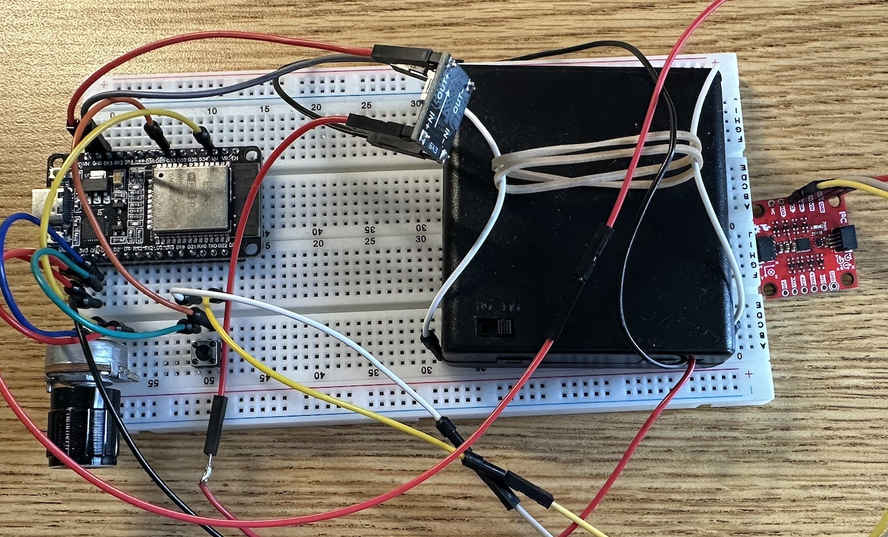
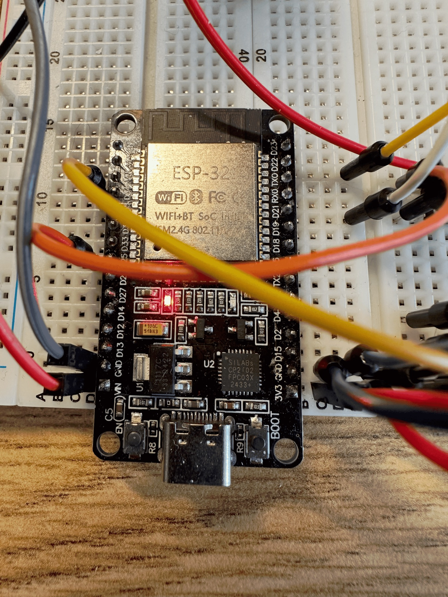
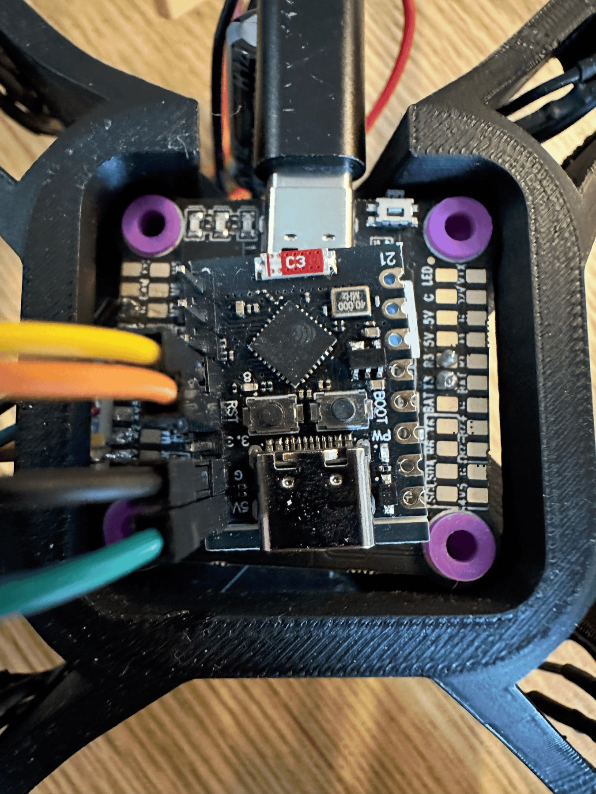

Custom Radio Transmitter & Receiver
The 1st IMU based radio communication system with ESPNOW Wifi protocol.

Background/Origin
The idea of controlling devices directly with our hands — especially when those devices are physically out of reach — has always fascinated me. It suggests a future in which human intention can extend seamlessly into the surrounding environment, allowing us to interact with and shape spaces beyond our immediate physical limits. To explore this concept, I began with a familiar platform: the quadcopter. Rather than using a commercial remote controller, I set out to design a custom wireless control system from scratch. After evaluating several options, I chose ESP-NOW on ESP32 modules as the communication backbone due to its low latency, reliability, and suitability for real-time control.
Demonstrating how IMU orientation maps to the attitude displayed in Betaflight: IMU RX to Esp32-C3 TX & FC TX.
The video below shows a working ESP32-based RX–TX link using the ESP-NOW protocol. Handheld IMU motion is streamed wirelessly and visualized in real time within the Betaflight interface, demonstrating minimal latency and reliable data transmission.

IMU-Based RC Transmitter over ESP-NOW (ESP32 + ICM-20948)
The custom wireless transmitter functions as a fully self-contained RC controller built around an ESP32. The ESP32 reads an ICM-20948 IMU over I²C, computing roll and pitch from accelerometer tilt equations while estimating yaw through integrated gyroscope data with wraparound handling. Throttle is sampled from an analog potentiometer, and all control channels are passed through tuned exponential moving-average (first-order) low-pass filters to reduce noise and jitter. These signals are then mapped to standard RC PWM-equivalent values (1000–2000 µs) for roll, pitch, throttle, yaw, and an auxiliary arming channel. Control commands are broadcast at 150 Hz over ESP-NOW on a fixed Wi-Fi channel with power saving disabled to minimize latency, and each packet includes a sequence number for debugging and integrity monitoring. To enhance safety, I implemented a debounced arming toggle with a throttle-low interlock to prevent accidental arming at high power.

ESP-NOW to CRSF Receiver Bridge (ESP32-C3 → Betaflight Flight Controller)
I implemented a low-latency ESP32-C3 receiver that bridges ESP-NOW packets to the CRSF protocol used by a drone flight controller. The receiver listens on a fixed Wi-Fi channel, parses a packed five-channel control message (roll, pitch, throttle, yaw, arm), and converts standard 1000–2000 µs RC values into CRSF’s 11-bit channel range. It then bit-packs 16 channels into the 22-byte CRSF payload and appends a CRC-8 checksum (polynomial 0xD5) to ensure protocol integrity. Complete CRSF frames are streamed to the flight controller over UART at 420 kbaud at approximately 150 Hz. A watchdog failsafe was added that automatically disarms and reduces throttle if no valid packets are received within 300 ms.